3.1 Temperature and heat
Experiment: introduction to thermal physics
Work through these stations.
- Using the thermistor: put a multimeter on the resistance (ohm) scale and record the thermistor's resistance. Hold the thermistor between your fingers for a few minutes and read it again.
- Methylated spirits and cotton wool: dab your wrist with "metho".
- Electric fan: record a thermometer's reading, dip it in water, place it in front of a fan and read it again.
- Thermal conductivity: time how long it takes for wax on the ends of four metal strips (aluminium, brass, copper, iron) to melt when heated in the centre.
- Bimetallic strip: heat a strip made of two different metals riveted together.
- As cold as ice! Hold some ice until it melts and compare how cold the melted water feels.
- Can you be a thermometer? Put one hand in hot water and the other in icy water for two minutes, then put both in lukewarm water.
What happens to the resistance of the thermistor as its temperature rises?
The resistance decreases as the thermistor warms up (for the common NTC type of thermistor), so it can be used to measure temperature.
Dab your wrist with metho. What do you experience? Why?
It feels cold. The metho evaporates quickly, and evaporation takes heat energy from your skin, cooling it.
Why does the temperature of the wet thermometer change in front of the fan?
The temperature drops. The fan speeds up the evaporation of water from the thermometer bulb, and evaporation removes heat energy from the bulb.
Which metal transfers thermal energy the fastest?
Copper has a very high thermal conductivity (about 380 W m−1 K−1), higher than aluminium (240) and much higher than brass and iron.
Describe and explain what happens when the bimetallic strip is heated.
The strip bends (curls to one side). The two metals expand by different amounts when heated, so one side becomes longer than the other and the strip bends towards the metal that expands less.
Does the melted water feel colder than the ice, or just as cold?
The melted water is at about the same temperature as the ice (0°C), but the ice feels colder, because melting absorbs a lot of heat energy from your hand without changing temperature.
Describe what each hand feels in the lukewarm water, and suggest an explanation.
The hand that was in hot water feels cold in the lukewarm water, while the hand that was in icy water feels warm. Our skin senses heat flowing into or out of it (temperature differences), not the actual temperature. The warm hand loses heat to the lukewarm water and the cold hand gains heat, so the same water feels different to each hand. Our hands are not reliable thermometers.
Kinetic model
The kinetic particle model describes the behaviour of matter (solids, liquids and gases). Its assumptions are:
- All matter is made of tiny particles (atoms, molecules).
- Particles are in constant motion (even in very cold solids).
- No kinetic energy is lost or gained overall in collisions between particles.
- There are forces of attraction and repulsion between particles in a material.
- The distances between particles in a gas are large compared to the size of the particles.
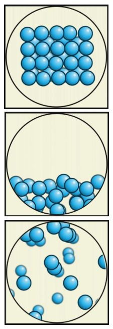
- Solids: strong attractive forces (bonds) keep the atoms fixed in place in a lattice, with a balance of attraction and repulsion. The atoms can vibrate but cannot move from place to place (translate).
- Liquids: there is still a balance of attraction and repulsion. Molecules can vibrate and move about freely within a fixed volume, so a liquid takes the shape of its container.
- Gases: particles are in constant random motion, colliding with each other and the walls of the container. A gas has no fixed volume: the particles move fast enough to overcome attractive forces.
Heat vs temperature
Substances that transfer heat easily are thermal conductors; those that don't are thermal insulators.
We usually measure temperature on the Celsius scale, which is based on water freezing at 0°C and boiling at 100°C, with 100 even degrees in between.
Absolute zero and the Kelvin scale
When a gas is heated in a closed container, its pressure increases. Plotting pressure against temperature (in °C) for different gases and extrapolating the graphs, they all reach zero pressure at the same temperature: −273.15°C.
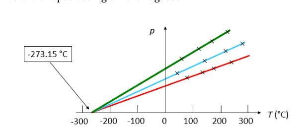
Because the lowest possible pressure is zero, this is the lowest possible temperature, called absolute zero. At absolute zero, molecules have zero kinetic energy.
The Kelvin temperature scale starts at absolute zero. One kelvin is the same size as one degree Celsius, so a change of 1 K equals a change of 1°C.
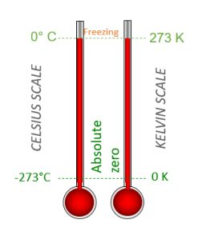
A body has a temperature of 320 K. What is this temperature in °C?
°C = K − 273 = 320 − 273 = 47°C.
The temperature then increases to 350 K. State the increase in temperature in °C.
An increase of 350 − 320 = 30 K is the same as an increase of 30°C, because the two scales have the same size degree.
Section 3.1: Key summary questions
The temperature at which water freezes is °C, which is K.
Describe how the motion of particles in a solid changes as the solid is heated.
The particles vibrate more (faster and with more energy), because their kinetic energy increases. They also move slightly further apart, so the solid expands (an increase in potential energy).
3.2 Heat transfer
If two objects are in thermal contact, thermal energy (heat) is transferred between them, by conduction, convection or radiation.
Conduction
Conduction transfers heat without a net movement of particles. When two solids at different temperatures touch, thermal energy passes from the hotter object to the cooler one.
- Vibrating atoms in one part of a material pass their vibrations on to neighbouring atoms, atom to atom.
- In metals, free electrons gain speed when heated and collide with nuclei, transferring heat as well. This is why metals are good conductors.
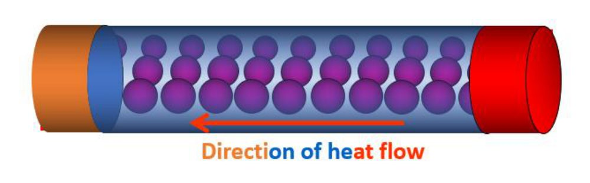
Thermal conductivity describes a material's ability to conduct heat:
| Material | Conductivity (W m−1 K−1) |
|---|---|
| Silver | 420 |
| Copper | 380 |
| Aluminium | 240 |
| Steel | 60 |
| Ice | 2.2 |
| Brick, glass | 1 |
| Concrete | 1 |
| Water | 0.6 |
| Human tissue | 0.2 |
| Wood | 0.15 |
When a material conducts heat from a hot object to a cold one, the hot object loses energy and cools while the cold object gains energy and warms. Eventually both reach thermal equilibrium: there is no more net transfer of heat.
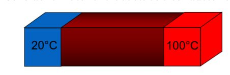
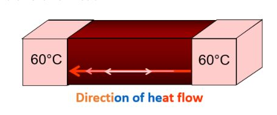
Convection
Convection needs a fluid (liquid or gas) to transfer heat. For example, hot air is less dense than cold air, so it rises. As it rises it cools, becomes denser and sinks. This forms a cycle called a convection current.
Convection currents drive many physical systems, such as magma flows and air and ocean currents.
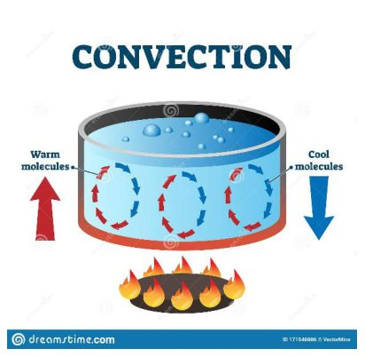
Radiation
Thermal radiation is the only way heat can be transferred without any medium (solid, liquid or gas). Heat travels as electromagnetic radiation (infrared).
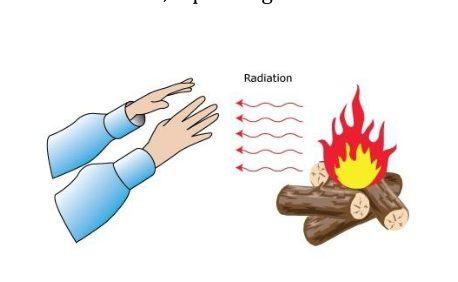
If an object absorbs more energy than it emits, it heats up; if it absorbs less than it emits, it cools down. All objects emit radiation, but not at the same rate. The rate of radiation depends on:
- surface area: more area means a higher rate of radiation
- temperature difference between the object and its surroundings: a bigger difference means a higher rate
- surface colour and texture: matte black surfaces absorb and emit radiation faster than white, shiny ones.
Experiment: storing thermal energy
The thermal mass of a material is its ability to absorb and store heat energy. Dense materials like concrete, bricks and tiles need a lot of energy to change temperature, so they have high thermal mass. Lightweight materials such as timber have low thermal mass. A concrete floor can absorb radiant heat during the day and re-radiate it into the room at night, which can make a big difference to comfort and heating bills.
Activity: find out which material is best at storing and releasing heat. A cube forms a one-room "house" with a Perspex window, insulated walls and ceiling, and a temperature sensor on the back wall. A sample material (thick card, steel, aluminium, ceramic or plaster) forms the floor. A lamp shines through the window onto the floor while a data logger records the temperature. Share your results with the class.
Which type of material would you expect to be best at storing and then releasing heat? Explain.
A dense material with high thermal mass, such as ceramic tile or plaster (or concrete/brick). It absorbs a lot of heat energy while the lamp is on, warms up slowly, and then releases the stored heat slowly after the lamp is turned off, keeping the room warmer for longer. Low-density materials such as thick card have low thermal mass and store little heat.
Section 3.2: Key summary questions
- Your feet get hot when you walk on sand at the beach.
- Your back feels warm when you sit in the sun.
- You boil water in an electric kettle.
- You feel cold when you dive into a swimming pool.
Two identical bathtubs are filled to the same level. The particles in bathtub A move faster than the particles in bathtub B.
- Which bathtub has warmer water?
- Which bathtub has more heat energy?
Faster particles mean higher average kinetic energy, which means a higher temperature. With the same amount of water, the warmer bath also holds more thermal energy.
As the water cools, each bath loses heat energy. List three places this heat energy could go.
Into the bathtub material, the surrounding air (and the room), and any person or object in the bath. (It can also be lost by evaporation of water.)
3.3 Global energy systems
Tectonic plates
Conduction, convection and radiation are crucial processes for moving heat in the Earth's mantle.
- Heat energy in the Earth comes from the radioactive decay of elements such as uranium.
- Heat is not evenly spread in the mantle: it is hotter near the core and cooler near the crust, which causes convection currents.
- Under the right conditions, solids at high temperatures can move, although slowly. Hotter rock slowly rises, and the surface crust moves horizontally across the Earth.
- Hotter areas rise at mid-ocean ridges and sink at ocean trenches.
- Movement at the edges of tectonic plates causes volcanoes and earthquakes.
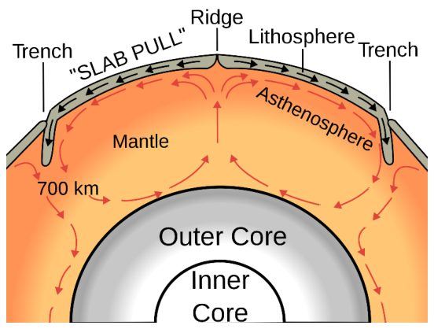
Sea breezes
Along the coast you often get a cool breeze from the sea, particularly late in the afternoon. This is a sea breeze.
Sea breeze (day):
- During the day, the land warms up faster than the water.
- The air over the land heats up and rises.
- Cooler air over the water sinks and is drawn in over the land to replace the rising hot air. This creates the sea breeze.
Land breeze (night): not noticed as often, because people are usually asleep.
- At night, the land cools down faster than the water.
- The warmer air over the water rises.
- The air over the land cools, sinks, and flows out to replace the rising air over the water. This creates the land breeze.
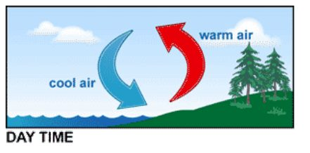
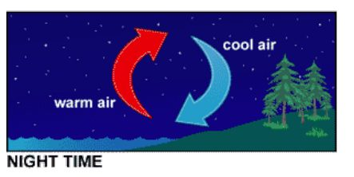
Section 3.3: Key summary question
Explain how an onshore sea breeze occurs. (In the booklet, draw a clearly labelled diagram as well.)
During the day, the land warms up faster than the water. The air over the land is heated, becomes less dense and rises. The cooler, denser air over the water sinks and is drawn in over the land to replace the rising hot air. This movement of cool air from the sea to the land is the sea breeze, part of a convection current.